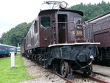

| EF53形電気機関車 | ||||||||||||||||||||||||||||||||||||||||||||||||||||||||||||||||||||||||||||||||||||||||||||||||||||||||
| 概要 | ||||||||||||||||||||||||||||||||||||||||||||||||||||||||||||||||||||||||||||||||||||||||||||||||||||||||
 昭和7年に誕生した直流機関車で計19両製造された。この機関車は昭和3年に誕生したEF52形の歯数比を変更して最高速度を向上させたもので、後に続々と誕生した旧型機関車の基礎となった形式である。戦前を代表する旅客用機関車に成長し、東海道本線の優等列車の牽引に活躍した。その優れた性能から、昭和8年～29年にかけては16・18号機が御召し列車専用の機関車に指定されたが、列車暖房用のボイラーを搭載していなかったのが仇（あだ）となり、同装置を搭載したEF58形機などに働く場所を奪われ始めた。そのため、元御召し機を含む全機がEF59形機関車へと改造され、山陽本線の通称「セノハチ」と呼ばれる瀬野～八本松間の急勾配区間へ投入されて上り列車の補機として第2の人生を送る事となる。EF53形という形式の消滅は、EF59形への改造が完了した昭和40年11月という事になるが、改造後のEF59形までを含めると同機が全廃された昭和59年まで生き残ったことにもなる。 上越線関連では、水上機関区や長岡第一・第二への配置履歴はないものの、高崎第二機関区に述べ16両が配置された。そのため、上越線にも入線したのではないかと思われる。高崎第二機関区に配置された機関車に御召し指定機は含まれていなかった。また、EF53として存在した最後の機関区が「高崎第二機関区」だった車両がほとんどで、EF59への改造後は全機が瀬野機関区へ転出した。改造の詳細は別表の通り。 ※EF59-11号機から復元改造されたEF53-2号機とEF59-1号機が「碓井鉄道文化むら」保存されています。 |
||||||||||||||||||||||||||||||||||||||||||||||||||||||||||||||||||||||||||||||||||||||||||||||||||||||||
| 機関車の諸元 | ||||||||||||||||||||||||||||||||||||||||||||||||||||||||||||||||||||||||||||||||||||||||||||||||||||||||
|
||||||||||||||||||||||||||||||||||||||||||||||||||||||||||||||||||||||||||||||||||||||||||||||||||||||||
| EF53の改造履歴 | ||||||||||||||||||||||||||||||||||||||||||||||||||||||||||||||||||||||||||||||||||||||||||||||||||||||||
|
||||||||||||||||||||||||||||||||||||||||||||||||||||||||||||||||||||||||||||||||||||||||||||||||||||||||